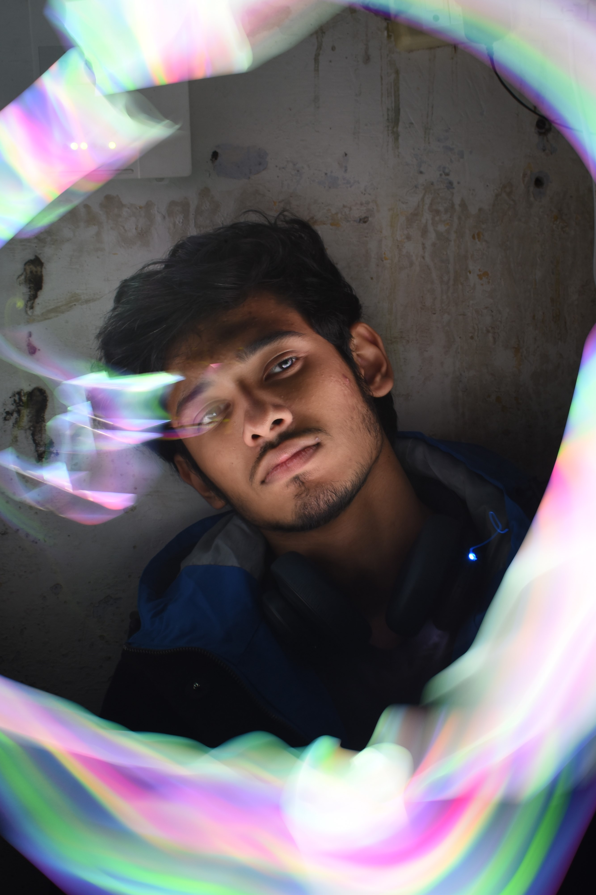
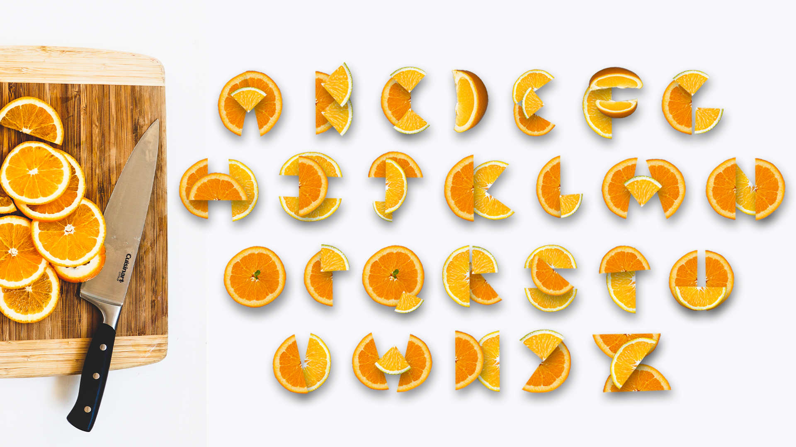
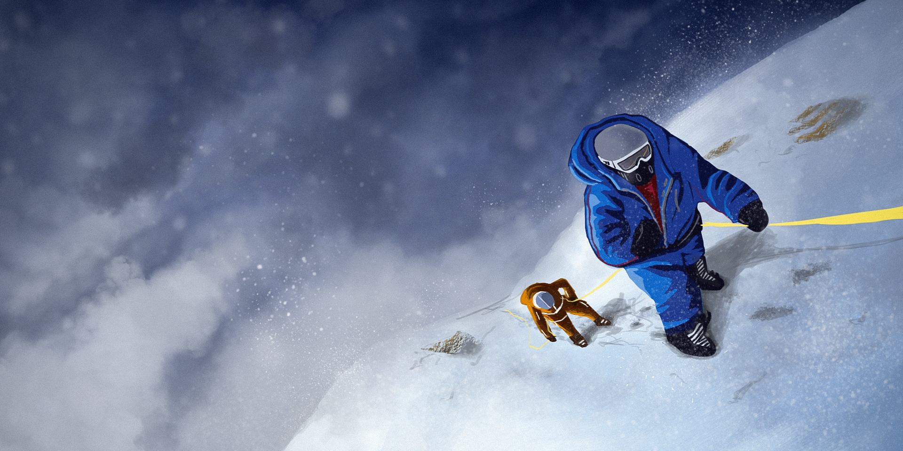
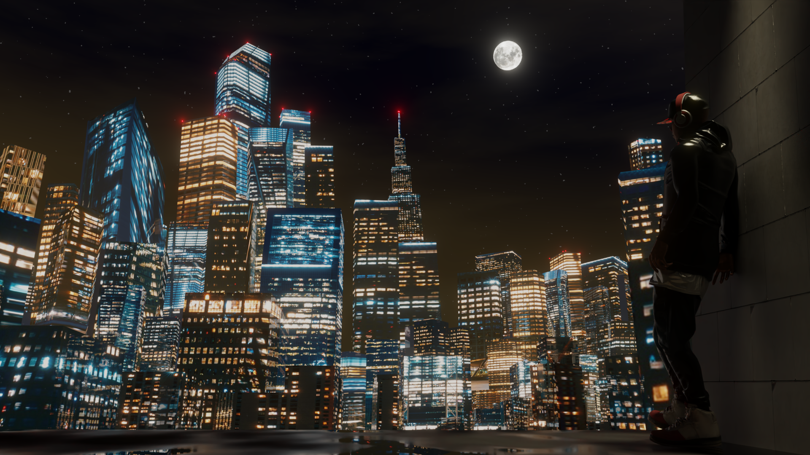

Photography
Navras-Emotions



DATE: December 2018
TITLE: Navras-Emotions
INVOLVEMENT: Photographer, Creative Director, Stylist.
BIO: This project was a photography series of different photos that dipicted different emotions of people and how technology enhances it.
Composition in Photographer
.JPG)
.JPG)
DATE: Febuary 2023
TITLE: Composition in Photographer
INVOLVEMENT: Photographer
BIO: This is a photo series that i did to showcase my skills in capturing the perfect composition.
Chiaroscuro
.jpg)
.jpg)
.JPG)
DATE: September 2019
TITLE: Chiaroscuro
INVOLVEMENT: Photographer
BIO: This is a photo series that I did to document the beautiful city of Luckhnow in India in Monochrome black and white.
Squirrels


DATE: Febuary 2023
TITLE: Squirrels
INVOLVEMENT: Photographer
BIO: This is a photo series that documents the wild life in ottawa that documented during the winte time.
Graphic Design
Spectrum Colors Rebranding


DATE: May 2020
TITLE: Spectrum Colors Rebranding
INVOLVEMENT: Graphic Designer, Creative Director, Visual Designer.
BIO: This project was a team project in which my group was responsible to rebrand a paint company in india called "SPECTRUM COLORS". We were also incharge of creating the company's merchandise.
Space Age Poster

DATE: March 2023
TITLE: Space Age Poster
INVOLVEMENT: Graphic Designer
BIO: This black and white space age poster was created to test my skillset in adobe illustrator. It had some guidlines such as: only use one type and one type on path to create a visual that will convey the message of space age travel.
TopShift Magazine Design


DATE: July 2019
TITLE: Layout Design TopShift
INVOLVEMENT: Graphic Designer
BIO: This magazine was designed using the software ADOBE INDESIGN (A professional layout and graphic design software). The idea behind it was to create a easy to navigate Visuals for a Magazine that will look aesthetic and pleasing to the eye.
Illuatrations
Inktober 2022
.jpeg)
.jpeg)
.jpeg)
.jpeg)
DATE: October 2022
TITLE: INKTOBER 2022
INVOLVEMENT: Illustrator, Photographer
BIO: This was a challenge that I took part in for october 2022 called the "Inktober" in which the participants are given random prompts daily and they have to finish a single piece of art in a day based on that prompt.
Orange Typeface
DATE: March 2018
TITLE: Creative Type
INVOLVEMENT: Illustrator
BIO: In this project i tried to create a new display typface using just shapes of orange slices.
Concept Art Jazba

DATE: January 2020
TITLE: Jazba
INVOLVEMENT: Illustrator, Storyboard Artist.
BIO: In this project I was incharge of creating concept art for an animated music video for a music band "Nalayak".
Blended 2022

DATE: January 2022
TITLE: Blended
INVOLVEMENT: Illustrator, 3D Artist
BIO: These are individual art pieces that I created using 3D blender to create small snippits of visualizers of music that I like .